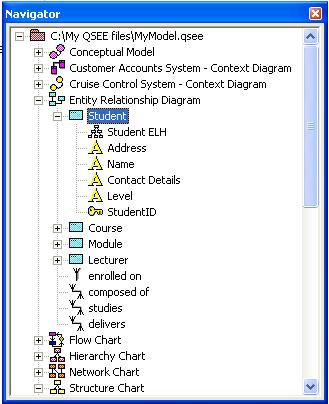

|
|
QSEE SuperLite - Navigator Tree
This document provides help information related to the use of the
'Navigator Tree' within the QSEE SuperLite environment. The
navigator tree window provides an hierarchical type overview of all
objects that currently exist within a project. The navigator tree and
the objects it contains may be manipulated in several ways. Tree
'branches' may be expanded and collapsed in order to hide unnecessary
detail.
To return to the main help page click the
back button below -
|
|
Working with the Contents
The content displayed by the navigator tree is dependent upon the objects
that exist within the open project. An object is represented within the
navigator tree using an appropriate 'icon'. Each object has a context sensitive
menu that may be activated by right clicking on its icon within the tree.
This menu provides features appropriate to the object along with a number of
standard options, such as "locate and show" and "delete". Double clicking
an icon with the left mouse button will display the model on which the object
exists, while also placing the object in the current diagram selection. A tree
branch can be expanded or collapsed by clicking the small '+' symbol or '-'
symbol respectively (shown to the left of the icon). An example of the tree
navigator window is shown below.


Back To Top
Working with the Window
The navigator window is displayed by default but can be hidden using either
an option from the main menu or a button on the main toolbar. To hide or display
the navigator window using the main menu select the "View | Navigator" option.
If the "Navigator" option is ticked then the navigator window will be displayed,
otherwise it will be hidden. The navigator can also be hidden by left clicking
on the black cross in the top right corner of the navigator window.
The navigator window is usually positioned to the left hand side of the
application. The window however may be repositioned anywhere on the screen. This
is done by left clicking and holding down the button while dragging the window
using the top part of the frame. Once the left button is released the
window will be repositioned at the appropriate point. If the window is dragged
all the way to the right hand side of the screen it automatically attaches
itself to the right hand side of application. The window also automatically
attaches to the left hand side of the application in appropriate circumstances.
If the window is dragged to the middle of the screen it appears as an
independent (floating) window.
The navigator window may at any time be resized both horizontally and
vertically. This is achieved by positioning the mouse pointer over the
appropriate border and dragging the window to the required size.

To return to the main help page click the button
below -